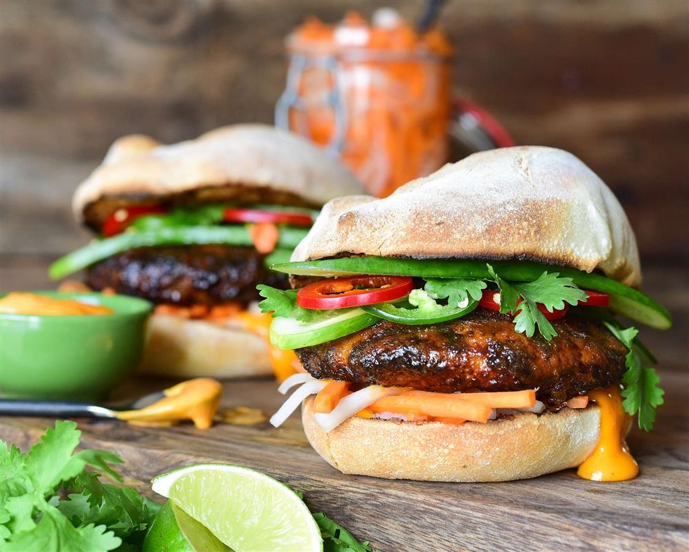

Banh Mi Burger
Ingredients
- 2 carrots
- 1 small bunch radishes
- 1 jalapeño (thinly sliced, optional)
- ¼ cup rice wine vinegar
- 2 tablespoons sugar
- ¼ cup mayonnaise
- 1 clove garlic
- 2 tablespoons Sriracha or sambal
- 1 tablespoon fresh lime juice
- salt and pepper
- 1 ½ pounds ground beef
- 1 tablespoon canola oil
- slices of cheddar cheese
- Kaiser Rolls
- Mint, Thai basil, and cilantro
How to Make this Banh Mi Burger
-
Combine the carrots, radishes, and jalapeño in a mixing bowl and
toss with the vinegar and sugar. Set aside.
In a medium bowl, combine
the mayonnaise, garlic, Sriracha, and lime juice.
Season with salt and pepper and set that aside as well.
-
Divide the beef into 4 equal portions about 6 ounces each.
Form each portion into a ¾ inch thick burger, making a depression in the center with your hand.
Season with salt and pepper, and brush the burgers lightly with oil.
-
Heat grill over high heat. Grill the burgers for 3 minutes on the first side,
until slightly charred and golden.
Flip the burgers and cook on the other side for another 3 minutes.
Top with the cheese and cook for another minute.
-
Meanwhile, place the rolls on the grill cut-side down and lightly toast for a couple minutes.
-
By now, your burgers should be done. Remove from the grill or pan and
tent with foil to allow them to rest for a minute.
-
Spread the spicy mayo onto each roll, and top with the burgers.
Then top with your pickled vegetable mix and herbs. Serve!